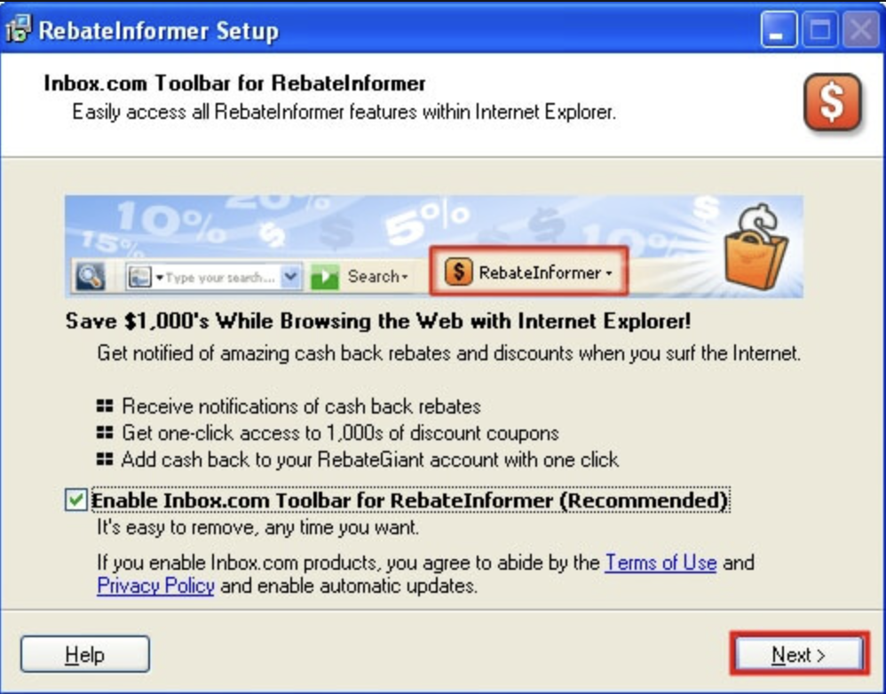
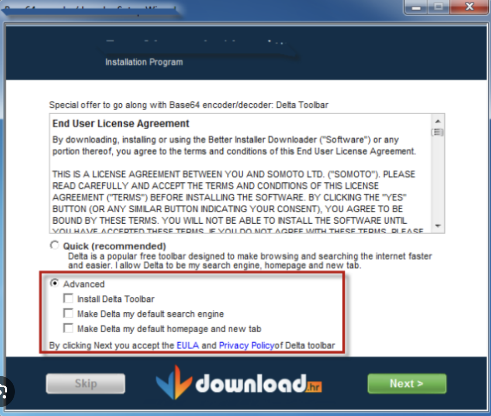
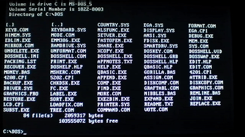
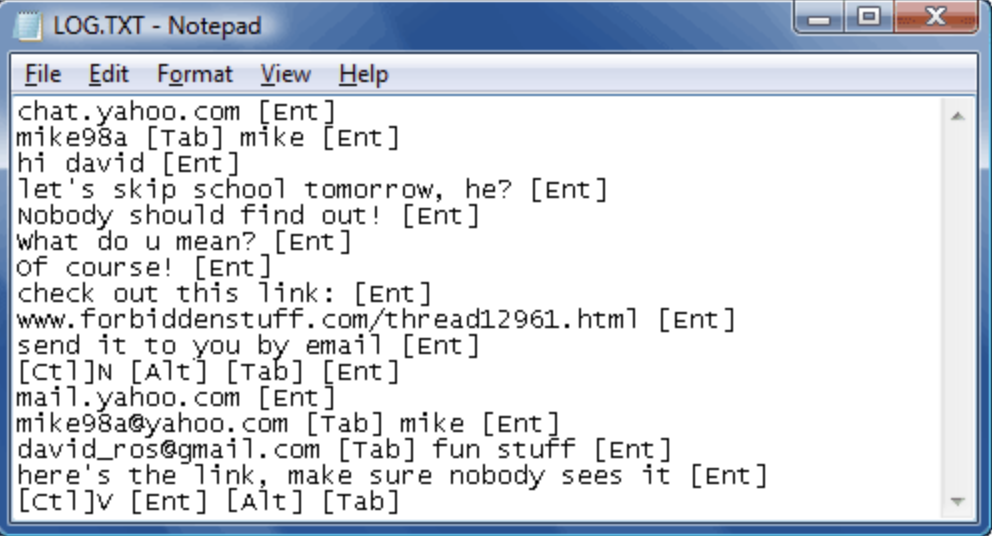
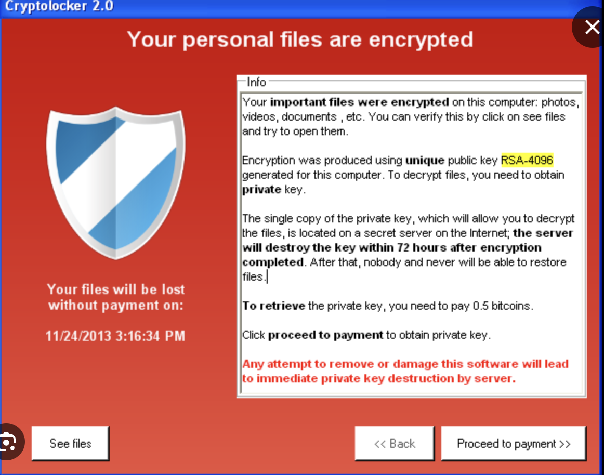

MALWARE
Common Types
Adware
— Least dangerous type
— Software that constantly displays unwanted and annoying ads on your phone/computer
— EX: Browser toolbars circa. 2009
—— Quicktip, don't ever click the recommended option


Virus
— One of the most common types
— Software that replicates itself continuously and modifies existing programs by infecting it with its code
— EX: Cascade virus circa. 1980s-1990s
—— Infected command files and made it so text on the screen would fall down into a pile at the bottom
—— Made normal computer operations impossible

Spyware
— Software that monitors a user's actions on a computer without them knowing
— Used to steal private information and data, and can grant unauthorized access
— EX: Keylogger, a program that monitors and records the keys you type
— EX: Trojans, a special type of malware that disguises itself as a more legimate product

Ransomware
— Considered one of the most dangerous types
— Restricts access to your files or system by encrypting it until a ransom is paid
— Threatens a user with having their things locked or deleted forever if they don't pay after a certain time
— EX: RansomedVC, a group that stole over 260GB of private data from Sony and began selling it for millions
of dollars after Sony didn't pay the ransom; happened around Sept-Dec 2023
